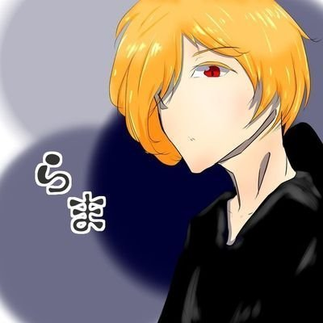

◎
SEASON 2
UNTAR
CONTROL
非公式ビルドプランナー
日本語
ENGLISH

X / TWITTER
@ramaaaa29
デバフでポイントを獲得し、バフに振り分ける。自分だけのレイドを組み立てよう。
SEASON 02
MODIFIER PLANNER
残りポイント
0
PT
PASS
獲得
+0
消費
−0
デバフを選んでポイントを獲得
選択を画像保存
すべて解除
◎
GLOBAL MODIFIERS
全プレイヤー共通
常時有効 · 6 MODIFIERS
PERSONAL LOADOUT
クリックで選択・解除 / 同時選択不可の組み合わせはロック
＋
PERSONAL POSITIVE
バフ · ポイントを消費
0
/ 31
選択中
−
PERSONAL NEGATIVE
デバフ · ポイントを獲得
0
/ 25
選択中